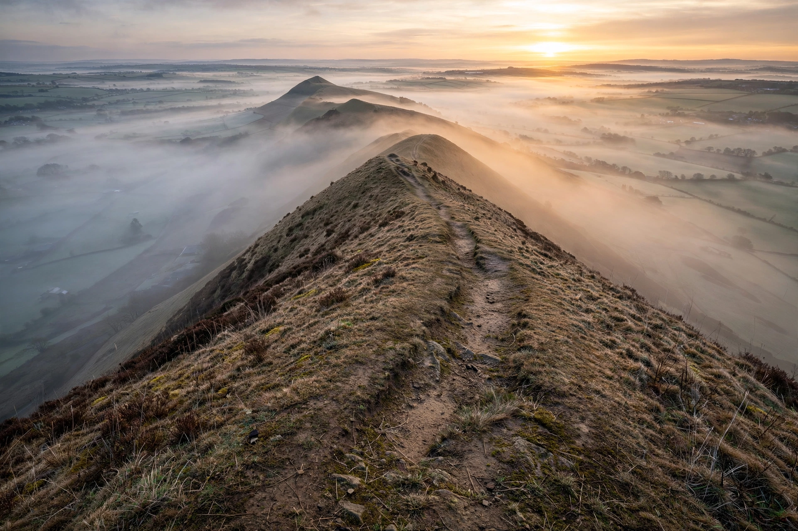

| Malvern Hills | |
| Highest point | Worcestershire Beacon, 425 m (1,394 ft) |
|---|---|
| Length | About 13 km (8 mi), north–south |
| Counties | Worcestershire, Herefordshire, Gloucestershire |
| Designation | Area of Outstanding Natural Beauty; Site of Special Scientific Interest |
The Malvern Hills are a range of hills in the English counties of Worcestershire, Herefordshire and northern Gloucestershire, overlooking the Severn Valley and the Vale of Evesham to the east and the rolling countryside of Herefordshire to the west. Dominated by the spa town of Great Malvern at their northern end, the hills are designated an Area of Outstanding Natural Beauty and are managed in large part by the Malvern Hills Trust (formerly the Malvern Hills Conservators). Their hard, ancient rocks are among the oldest in England, and their distinctive bare ridge is a landmark visible from great distances.

The hills are formed of Precambrian igneous and metamorphic rocks — diorites, granites and gneisses of the Malverns Complex, around 680 million years old — pushed up along the Malvern Line, a major north–south fault system. Erosion has stripped away younger overlying strata, leaving the resistant core as a narrow, steep-sided ridge. The range runs for about 13 kilometres (8 miles); its highest point is the Worcestershire Beacon (425 m), followed by the Herefordshire Beacon (338 m), crowned by the Iron Age hill fort known as British Camp.
The hills have been occupied since prehistoric times; British Camp is one of the finest hill forts in Britain, traditionally associated with the British chieftain Caractacus. In the 19th century Great Malvern became a fashionable spa, famous for Malvern water from springs such as the Holy Well, and for the hydropathic "water cure" practised by doctors James Wilson and James Gully, whose patients included Charles Darwin and Florence Nightingale. Bottled Malvern water was produced for centuries; commercial bottling at Colwall ended in 2010. The composer Edward Elgar lived in the area, walked the hills daily, and drew on the landscape for inspiration; the region is marketed as "Elgar Country", and the hills also inspired the poetry of W. H. Auden, who taught at a school in Colwall, and the Vision of Piers Plowman of William Langland, which opens on the Malvern Hills.
Some 1,200 hectares of hill and common land are managed by the Malvern Hills Trust under Acts of Parliament dating from 1884. The ridge offers extensive walking, mountain biking and paragliding, and supports acid grassland of scientific interest. Settlements along the range include Great Malvern, Malvern Wells, West Malvern, Little Malvern and Colwall.
Great Malvern · Worcestershire Beacon · British Camp · Edward Elgar